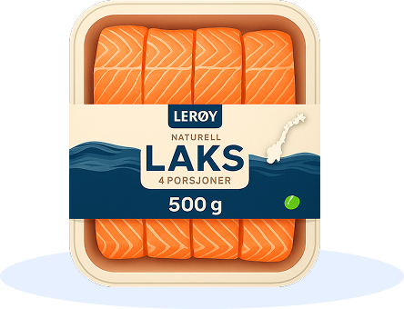
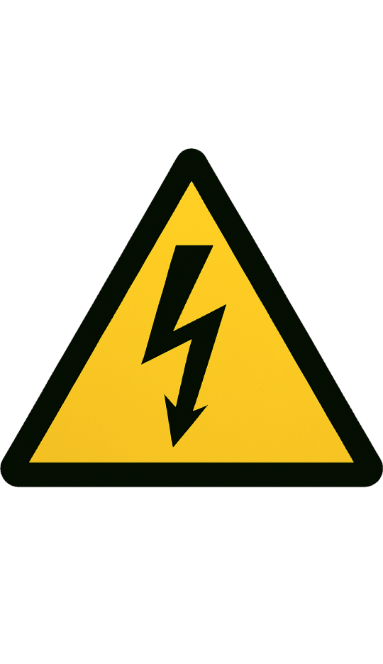
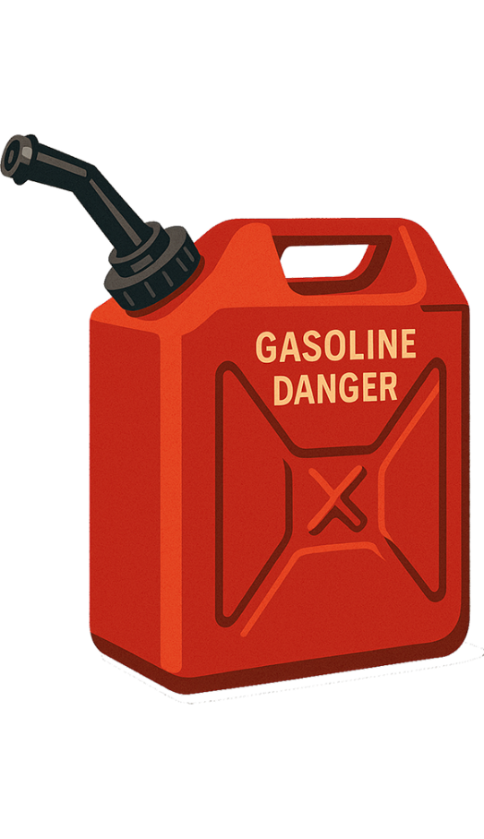
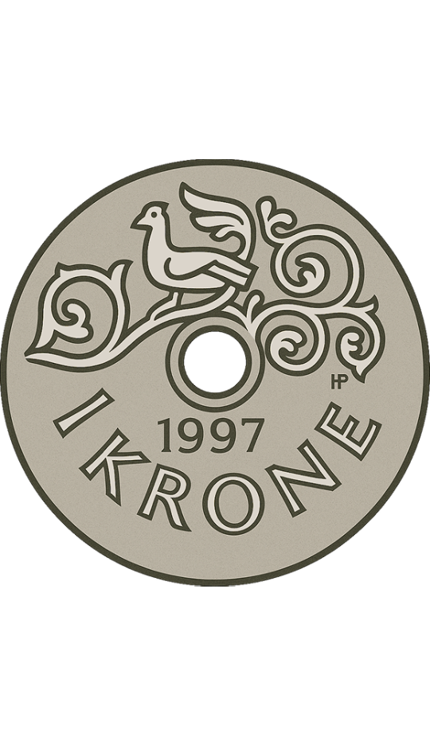
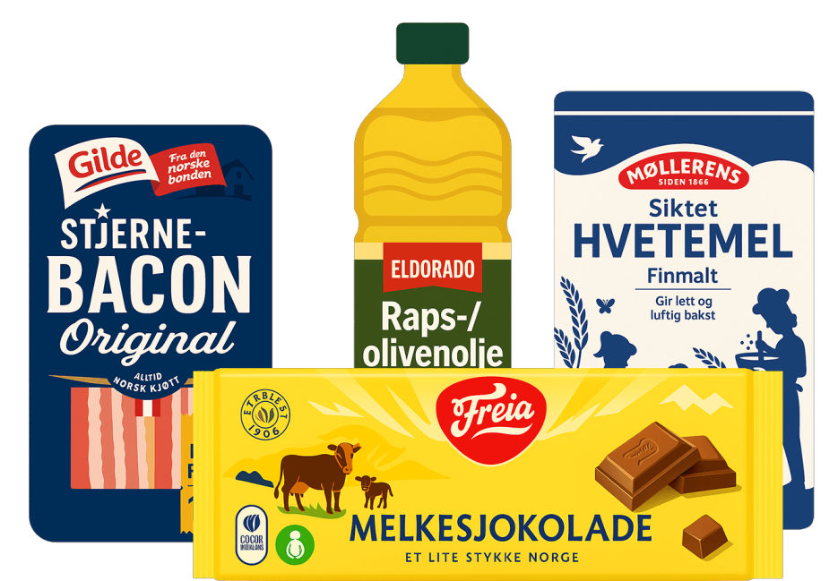
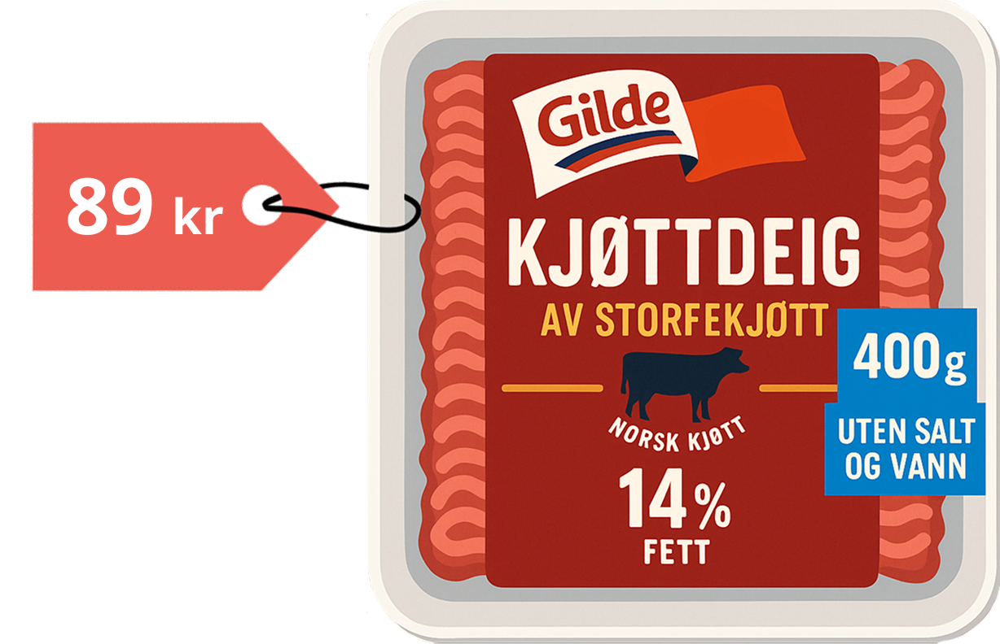

159 kr
Naturell laks 500 g
Prisene i butikkene har steget kraftig de siste årene. Den samme handlekurven som tidligere var en selvfølge, koster nå langt mer.
Forskjellen blir tydelig når vi ser på utviklingen over tid.
Statistisk sentralbyrå (SSB) har laget en egen «tacoindeks» som måler prisutviklingen på vanlige taco-ingredienser – som kjøttdeig, ost, grønnsaker, rømme og tacosaus.
Fra 2015 til 2025 har indeksen vist en markant vekst, og fredagstacoen koster nå langt mer enn før.
Kilde: SSB (2015) og Oda (2025)
Prisnivået har skutt fart, og dermed varer ikke pengene like lenge som tidligere.
Tenk deg at du har 200 kroner til å handle inn middag – holder det til en vanlig middag?
Selv en enkel hverdagsmiddag kan spise opp større deler av budsjettet enn før. Hvordan havnet vi her?
Matprisene har økt i mange år, men etter 2021 tok utviklingen ekstra fart. Grafen under viser hvordan prisene har endret seg siden 2015.
Grafen viser utviklingen i norske matpriser fra 2015 til 2025.
Indeksen starter på 100 i 2015 og ender litt over 140 i 2025 – noe som betyr at matvarer i snitt har blitt mer
enn 40 prosent dyrere på ti år.
– Vi måler prisutviklingen gjennom konsumprisindeksen (KPI), som viser hvordan prisene på ulike varer og tjenester utvikler seg over tid.
Tallene viser at mat er blitt betydelig dyrere de siste årene. Men hva er det som egentlig driver utviklingen?
Prisene i matbutikken styres ikke bare av én ting, men av mange faktorer som virker samtidig.
Når kostnadene øker i flere ledd samtidig – fra råvarer til energi og transport – blir maten i butikkene
dyrere.
Flere forhold har presset kostnadene oppover de siste årene. Noen av dem merkes lokalt, andre kommer utenfra.
Råvarer er selve grunnmuren i matproduksjonen. Når korn, soya eller gjødsel blir dyrere, øker prisen i hele kjeden – fra bonden til butikken.
Krigen i Ukraina og mer ekstremvær har presset prisene opp, og urolige markeder har gjort handelen både dyrere og mer usikker. Ukraina og Russland er store eksportører av korn og gjødsel, og usikkerhet i markedene gjør at hele kjeden påvirkes.
– Internasjonale forhold og økte råvarepriser, blant annet som følge av ekstremvær, er sentrale årsaker til at matprisene har økt.
Strøm påvirker mer enn bare regningen hjemme. Når energiprisene stiger, blir det dyrere å produsere, lagre og kjøle ned maten – og å frakte den videre til butikkene.
De siste årene har strømprisene ført til langt høyere kostnader for både matindustrien og dagligvarekjedene.
Når bensin og diesel blir dyrere, øker også prisen på å frakte varer til butikkene.
Etter pandemien har transportkostnadene steget kraftig, og det har presset prisene opp.
En svak norsk krone gjør at importerte varer blir dyrere. Når vi kjøper råvarer eller ferdigvarer fra utlandet, må vi betale mer fordi kronen har mindre verdi.
Dette er en viktig årsak til at prisene har økt de siste årene.
– Den svake kronen gjør at vi må betale mer for mat og råvarer vi importerer. Det bidrar til at prisene i butikkene presses opp.
Det er ikke én enkelt forklaring på hvorfor matprisene har steget – men summen av mange faktorer.
Resultatet merkes først ved kassen. Små kostnadsøkninger i hvert ledd blir til en langt dyrere handlekurv for
forbrukeren.
– Hovedårsaken til at matvareprisene har økt de senere årene er at kostnadene har økt i alle ledd av verdikjeden – fra dyrere energi og råvarer, til økte transportutgifter, svakere kronekurs og høyere kostnader i foredling og distribusjon.
Tallene viser prisvekst på utvalgte matvarer fra februar 2024 til februar 2025, basert på konsumprisindeksen (KPI) fra Statistisk sentralbyrå (SSB).
Vi tok kontakt med de store aktørene i dagligvarehandelen og spurte hva de tror om framtiden for matprisene.
– Av konkurransehensyn kan vi ikke si noe om framtidige priser. Coop eies av 2,6 millioner medlemmer og gjør det vi kan for å holde prisene nede.
Prisnivået framover avhenger av mange usikre faktorer – som valuta, energi, råvarer og transport. Selv små endringer kan gi store utslag i handlekurven.
– Vi kan ikke spå noe om fremtidig prising, men NorgesGruppen jobber hardt med å holde kostnadene nede, slik at prisøkningene skal bli så lave som mulig.
Selv om ingen tør å love noe, er budskapet klart: matprisene kan bli værende på et høyt nivå i lang tid framover.

Når kostnadene øker i hele verdikjeden, blir forskjellen synlig i det øyeblikket du står ved kassen.
Handlekurven blir tyngre – men posen tynnere.
For deg som forbruker betyr det at 200 kroner i dag gir deg langt mindre mat enn før. Kvitteringen har blitt
lengre, selv om posen er blitt lettere.
Matprisene rammer hardest dem som har minst å gå på – studenter, barnefamilier og pensjonister.
Den samme handlekurven koster mer – og for mange har den blitt tyngre å bære.
Alle sitatene i artikkelen er reelle. Vi har sendt henvendelser til Coop, NorgesGruppen og SSB, og fått skriftlig bekreftelse på at svarene kan brukes i denne sammenhengen.